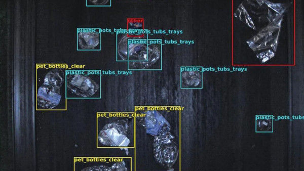

Like many industries, there’s little doubt that 2024 was the year AI took the waste management sector by storm. It has been the topic du jour in media headlines and on the waste management event circuit—from WasteExpo to IFAT. But even with the overwhelmingly positive response from MRFs that realise AI can help boost recycling rates, maximise material purity, and increase revenue, there has been some trepidation about adopting the latest technology on the block.

The legacy infrastructure within the waste management industry can make it challenging to implement and adopt new technologies quickly, but that doesn’t mean the industry is a stranger to implementing tech solutions. In fact, many MRF managers who are now eyeing AI were busy implementing robots for the first time just five years ago. Unfortunately, the often hasty rollout of robots in waste facilities over the past five years is giving some MRFs pause in adopting AI.
A Misguided Promise of Waste Robots?
Just as AI usage within waste management gained prominence in 2024, 2019 was the year of waste robotics. Robots were the main topic at the industry events that year and in all the waste-related news headlines. Only a year after China banned imports of waste from the Western world, the industry was looking for radical solutions to address a disrupted market. The focus became further automating the sorting and separation process at waste facilities with robots. This was the latest in years of continuous shifts away from manual to automated sorting solutions.
MRFs worldwide quickly jumped on the robotics bandwagon to help address the soaring cost of recycling with automation and improve the purity of recyclables to boost revenue. The problem at the time was that many of these facilities were flying blind when they decided to implement robots, with little data on their waste streams to actually influence where and what type of robots they should integrate, if any! The result was that some of the largest waste management companies in the world bought hundreds of robots and soon found that they weren’t achieving the desired results. Not long after, many of these robots were shut down, and some of the highest-cost assets for MRFs were lying dormant across facilities.
A Data-First Vs. A Robot-First Approach
One problem with the first go-round with waste robots was really a robot-first mindset vs. a data-first mindset. Without first finding a solution for giving full visibility into the end-to-end processes happening within facilities, MRFs relied on robots to both sort waste and provide data on the material they were sorting. However, sometimes the data uncovered with the help of the robot and its sensor validated that you didn’t actually need that very robot! In that sense, the approach was really backward, and managers found out the hard way that waste robots were akin to adopting any other type of sorting machinery, which is a solution to a specific problem, rather than being an overarching operational strategy.
Therefore, to avoid the pitfalls of 2019, the industry must first accept that the value of AI isn’t limited to implementing just robotics. Although you certainly can implement them alongside each other, there is a misconception in the industry that AI doesn’t make sense if you don’t have a robot sorting on the other end using that data. And that’s simply not the case. Waste data can be used to inform all operational changes throughout a facility, including the use of robotics.
The use of this data is also not limited to just the sorting process. Even the best sorting solutions won’t increase the purity and value of recyclables if there is bad infeed coming into the facility. Therefore, waste data that can be gleaned from the beginning of the waste stream can be extremely valuable as well. AI-powered cameras or sensors within this part of the process can identify waste composition to rebalance the materials an MRF is getting from suppliers. In fact, we found that when waste data was used to make just a 10% adjustment in the infeed blend of materials coming into a facility, it had a direct impact in decreasing valuable material in the residue line by 18%.
With waste data unlocked by AI within a full facility, waste management professionals can view unified performance across all processing lines within an MRF. MRF profitability relies on operators delicately balancing throughput rates, product purity, and the loss of valuable material to residue. Traditionally, MRFs have relied on data collected by manual sampling across key belts and product lines, resulting in a fragmented view of their operations. With AI waste data and analytics, MRFs can make data-driven decisions to maximize profitability and even decide to implement waste robotics.
The AI to Robot Roadmap
Today’s waste robotics providers all tout the inclusion of AI, but it’s still important to consider at what stage you’re actually harnessing that intelligence to get the data you need to make successful long-term decisions. When done in the proper fashion, AI and waste robotics can equal an amazing symbiotic relationship.
However, these robotic arms can cost hundreds of thousands of dollars, so waste managers need to be sure they need a specific robot to extract more value from their materials before purchasing. Without gathering the data and analysing it with AI ahead of robot implementation, MRFs lack visibility into waste flow composition. This makes it hard to identify where a robot would fit in waste facility processes and even harder to forecast the return on the sizable investment accurately.
For instance, waste robots can be ideal for sorting heavier items or challenging items such as plastic bags that may contain other items inside of them. In addition, if an MRF is dealing with bales of recyclables being rejected by optical sorters as contaminated on a regular basis, then a waste robot can be a great solution to sort through these bales to enable facilities to earn more money for recyclables that would historically be discarded.
However, if MRFs are simply looking to increase speed and volume, the waste data often says that an optical sorter is probably a better solution. These optical sorters can eject up to 1,000 items per minute, while even the fastest waste robot can only process 80 materials per minute. Therefore, to avoid robot buyer’s remorse, the best path forward for robotic implementation lies in first capturing the waste data to effectively scope and validate robot returns before making investments.
For instance, we’ve worked hand-in-hand with MRFs and the Waste Robotics team to deploy a robot validator process. AI-powered cameras can be installed in hours at a fraction of the cost of one robot within facilities to analyse the waste composition, cost, and return of deploying different robotic systems and then identify the best solution.
These facility managers are not locked into a specific robot or robot provider before they see the data they need to inform their decision. Instead, they can utilise an AI-led roadmap for implementing waste robots that maximise their ROI and minimise the amount of time it takes for robotics payback. Those who utilise AI in this fashion to enable data-driven decision-making can ensure they’re taking the right step forward with implementing both robotics and AI into their waste facility now and in the years to come.